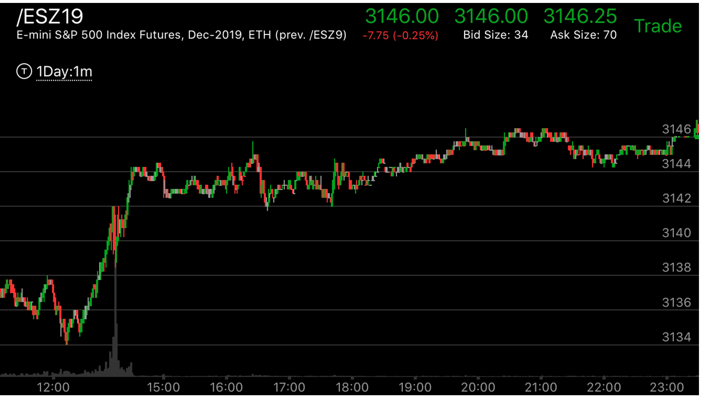
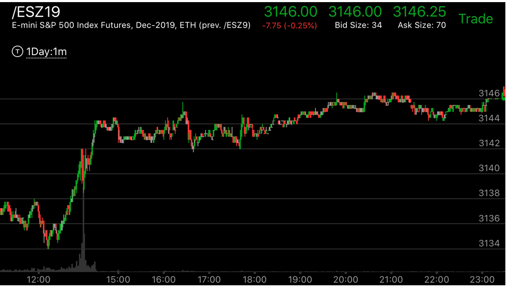
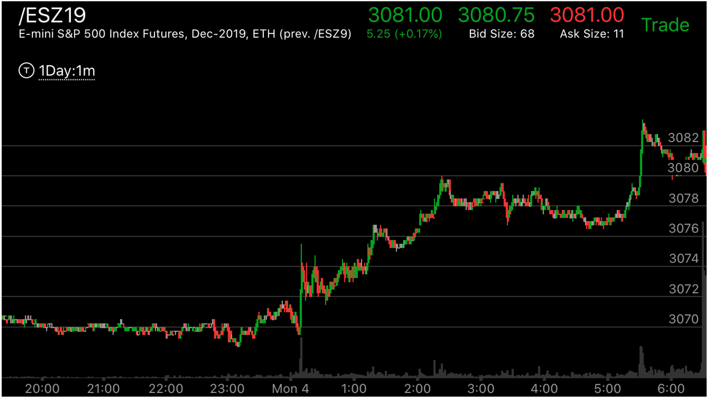
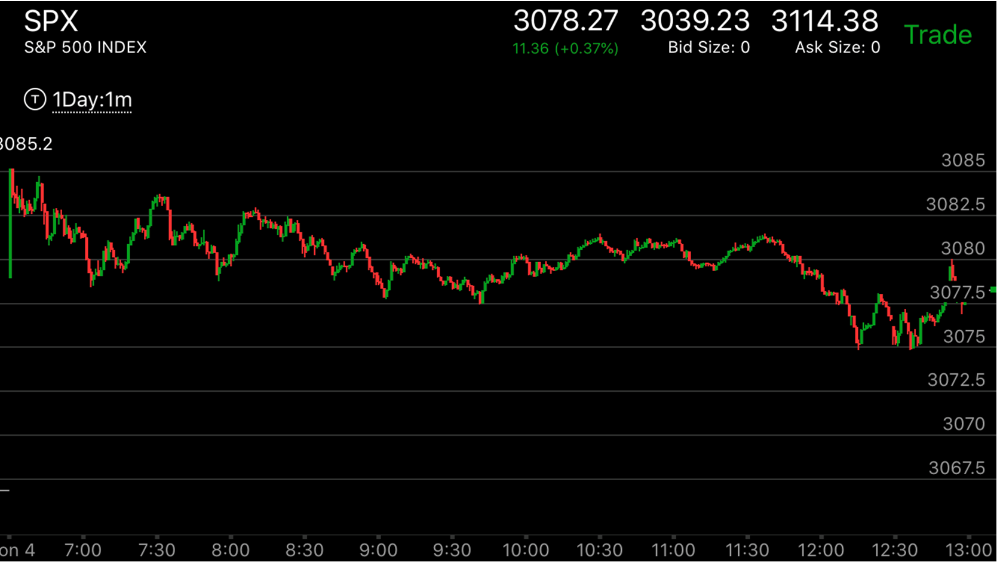
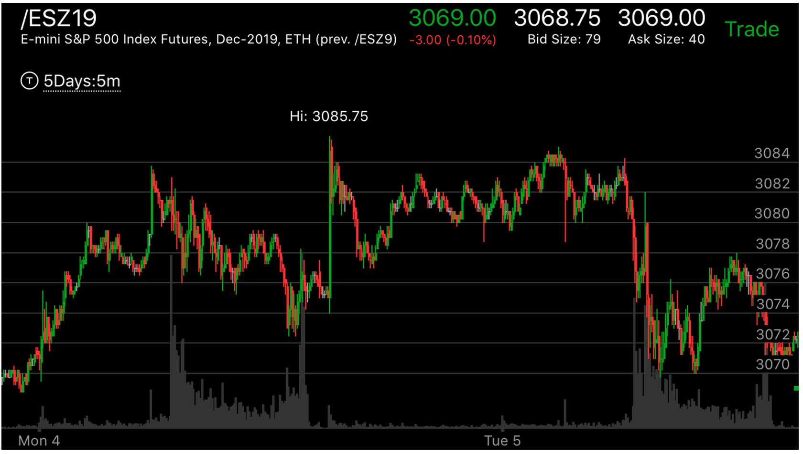

贯通走势
- 反向走势用的时间远远小于正向走势，而且很快就越过了起点。那么这个就是贯通走势。它的速度要超过反向走势的速度。它本身也出现了一个加速。这样就是贯通走势。
- 这个走势也可能失败，它可能是反向的第一浪很大。这样，它就会继续前进。关键看贯通走势以后，发生的相对速度。
 

图示：9：30出现了相对强势，它开始下跌，到了12：00下跌结束。结束后，反弹很快。新高后，立刻拉回，再次冲高，走平。这样它本身成了
一个相对强势。应该反转了。但是它在15：40下跌很快，而在16：40，冲高，创新高后，快速下跌，创走平新低。这些都表示要继续上涨。

图示：这个走势，它开盘创新低，然后冲高。但是没有创新高。反而创新低。
从盘前走势看，它在填补真空。创新低后，它一路快速大涨。创新高。然后震荡。虽然它震荡了一个小时。
似乎很强。但是她冲高后，走出了两段走势。这样，它未来一定会低于2907 这个点。它收盘后，在盘后大跌。低于2907.
也低于走势的开始。

图示：开盘后，冲高，然后走低，创新低。这个从盘前走势来看，是填补真空。大盘仍然处于升势。
它开始快速冲高。可以看到它很快就越过高点，创新高。然后走出了M走势后，再次创新高。这个从盘前走势看，是盘前高点。
但是从开盘后，走势看，是个贯通走势。它开始回调后，由于在高点并没有出现两段走势等到头的迹象。它大幅回调。基本回到原位。
然后才再次上涨。但是时间不够了。所以收盘并没有创新高。



图示：图一：盘前这个走势徘徊很久在3078附近。然后加速上涨。
图二：开盘后，它开始长时间高位震荡。这个震荡其实是为了抵消盘前的长时间震荡。然后，它开始破位下跌，
但是下跌当中，12：20它反弹，幅度比较大，回到原位后，再次反弹，幅度很小。再次回到原位。这个是相对弱势。说明到达了底部。
图三：收盘后，它很快就破新高，加速上涨。这个比下跌快的很多。说明是要给贯通走势。因为下跌走势刚刚结束，它就快速上涨了。